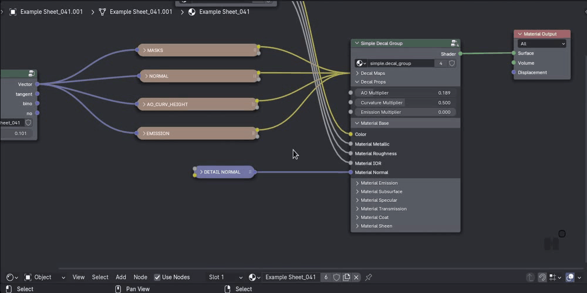

Toggle Region
shortcut T in 3D View, Asset Browser and Node Editors
Toggle Region toggles the toolbar and sidebar both via a single T key, depending on mouse position.
This works on the 3D View and as of version 1.7 also on Node Editors and Image/UV editors.
In the 3D View you can also optionally toggle two Asset Browser splits - one at the top, and one at the bottom.
Toggling the Asset Shelf is supported too, IF a Shelf is present on the 3D view, and IF toggling the shelf is enabled in the Toggle Region addon prefs.
Preferences
{kind=link}
Using Toggle Region
3D View
Issues
Attention
There is one small issue you will encounter on a new 3D view, where the tool has never before created an asset browser split.
A hint with instructions about how to fix it, will be drawn in the 3D view.
{kind=link}
Fixing this is only required once per 3D View or workspace, if you save your .blend file.
Keep in mind
There is a second potential issue, if you have an area above your 3D view, that has exactly the same width.
Closing your asset browser may then result in that other area growing, instead of your 3D View.
The way to deal with this, is by simply closing that other area, and opening it again manually.
This too is only required once.
Node Editor and Image/UV Editor
As of version 1.7, Toggle Region works in all node editors and in the Image/UV editor, to toggle either the tool bar or the side bar with a single T key.

Toggle tool bar or sidebar in node editor via single T keymap